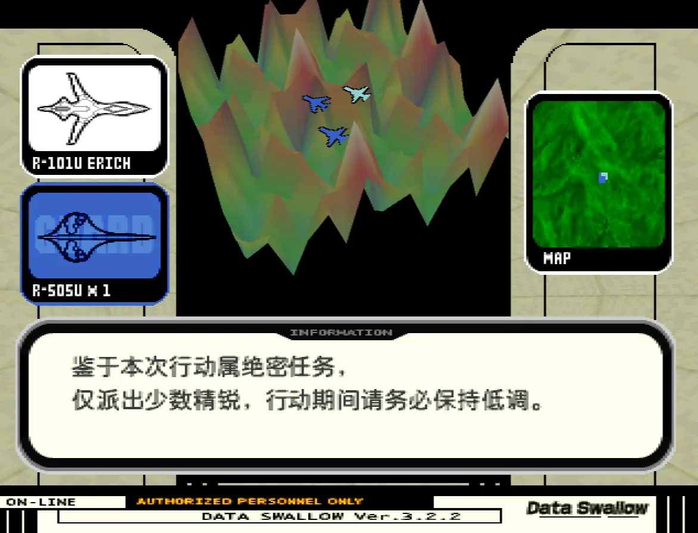
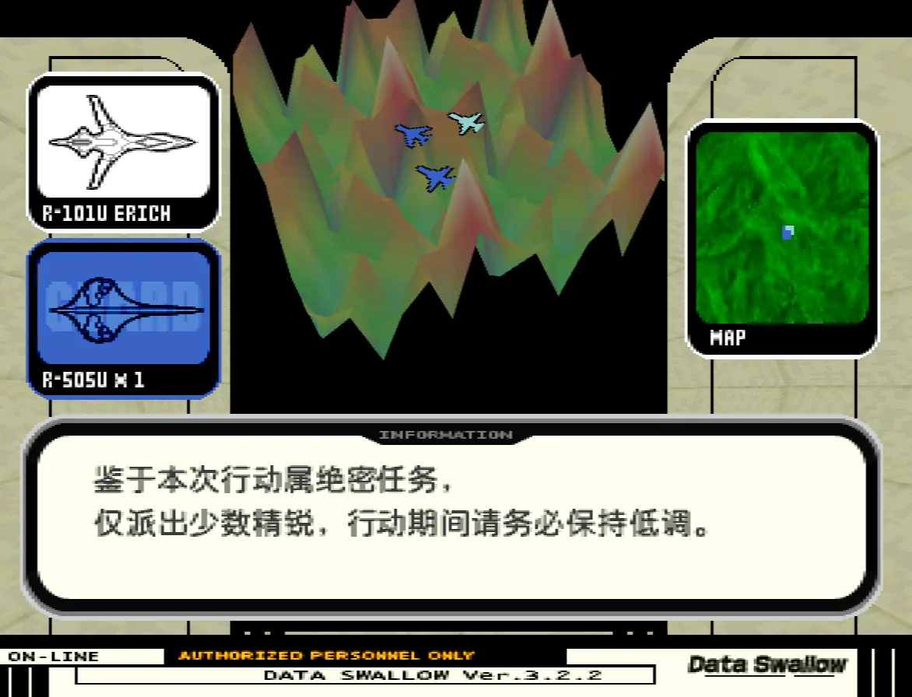
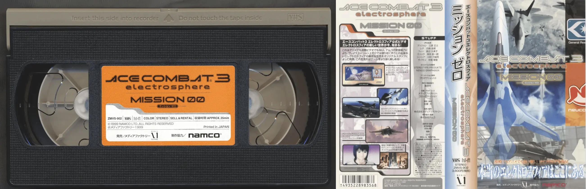
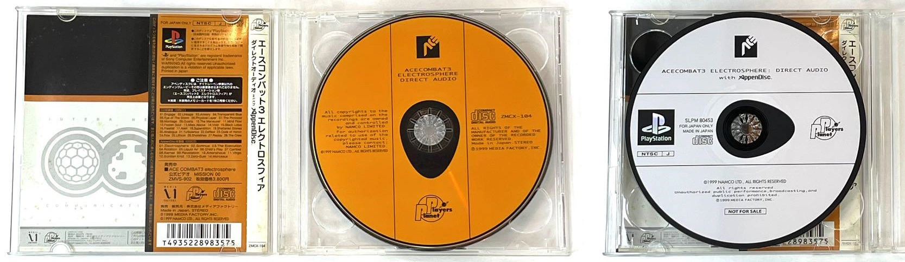
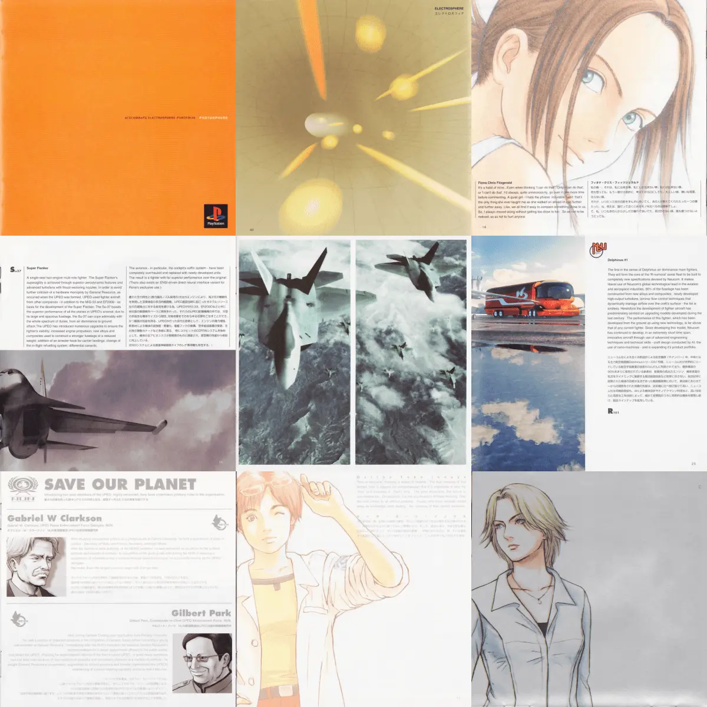
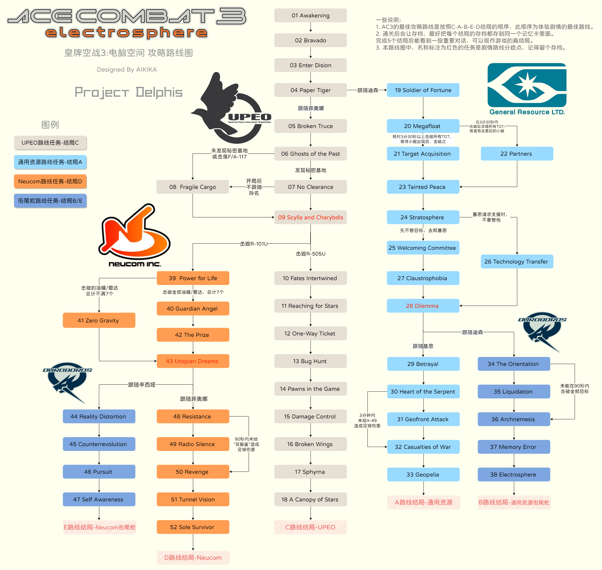

皇牌空战3 电脑空间 中文版
这是一个《皇牌空战3：电脑空间》的非官方翻译项目。本项目以日文版为基础，对游戏中的对话、界面等需要译的内容进行了中文化处理，能够完整的使用中文进行游戏。
本页面提供游戏光盘镜像的中文补丁下载。后续如有任何更新或改进，也会在此页面发布。除了游戏本体的翻译，本项目还包含了AC3相关的周边影像资料等内容的翻译。
另外，本项目提供一份完整的AC3全路线攻略路线图，方便参考。
翻译内容说明
| 内容部分 | 说明 |
|---|---|
| 对话文本 | 游戏中所有对话文本都已翻译为中文。包括角色视频邮件，新闻播报，广告，文字播送，任务简报等，使用字体为接近游戏原版字体的圆体字：寒蝉全圆黑。 |
| "搜索引擎"词条 | 含标题在内，全部翻译，字体为寒蝉全圆黑。 |
| 战场无线电对话 | 全部翻译为中文，使用的字体为缝合像素Fusion pixel，以确保文字快速显示时的阅读体验。 |
| 即时动画字幕 | 全部翻译，这部分文本来源和无线电一致，因此字体也是一样的缝合像素Fusion pixel。 |
| CG字幕 | CG动画，全部翻译，使用的字体为缝合像素Fusion pixel。 |
| 菜单 | 保留原有界面设计风格前提下，仅翻译了部分文本，装饰性英文大多保留不翻译。任务代号遵循系列传统，不做翻译。 |
预览
.webp)
.webp)
.webp)
.webp) 

.webp)
.webp)
.webp)
补丁下载及使用
使用方法
-
准备镜像文件
把CD1和CD2两个光盘镜像文件（BIN格式）复制到补丁文件夹，支持以下版本：
版本 容量（字节） CRC32 MD5 日版CD1 716,240,448 B6FAA72C 86fd694677098d26909086895404f571 日版CD2 723,766,848 C740C3FF c3909981452f1506290121b2763beb24 日亚版CD1 716,287,488 CCDDA3B5 30f7dce98b6901290cb26c9baf27268f 日亚版CD2 723,813,888 B86E0F52 50760963ae8a26ea0188b165f05b33a1 注意：此两版本的ID都是SLPS-02020(CD1)和SLPS-02021(CD2)。
-
运行补丁程序
双击 ac3_patcher.exe，程序会自动识别是否为支持的镜像。如果验证通过，将开始打补丁并生成新的bin文件。
-
存档兼容说明
汉化版本支持读取原来日版、日亚版存档。但请注意：日版和日亚版不能互相换碟，请勿混用两个版本的镜像。
-
关于CUE文件
某些场合可能需要cue文件配合镜像一起使用，使用新生成的cue文件即可。
周边资料翻译
包含一些官方资料的翻译，如果对游戏剧情和世界观感兴趣，这些资料将帮助你更深入地了解2030~2040年代的Strangereal世界。
录像带(VHS) AC3 MISSION 00
1999年发售录像带（VHS）ACE COMBAT 3 ELECTROSPHERE MISSION 00,包含35分钟的影像，介绍了世界观，机体设定等。
原声附带光盘AC3 DIRECT AUDIO with AppenDisc
1999年发售原声CD附带的CD-ROM：ACE COMBAT 3 ELECTROSPHERE : DIRECT AUDIO with AppenDisc，其中的一段八分钟的视频，包含关于X-49夜鸦的介绍
AC3 PHOTOSPHERE
游戏本体附带两本小册子，一本是说明书，一本是名为AC3 PHOTOSPHERE的周边图册，包含CG图和一些插画，并附有文字介绍世界观和角色。
其他内容
攻略路线图
AC3是一个包含多条分支剧情的游戏，强烈建议按照任务序号进行游戏，并依次解锁结局，会获得最好的剧情体验
其他
包含可以使用X-49存档的记忆卡文件，使用方法：
- 把这个记忆卡文件导入模拟器，这里是mcd格式，可以直接在Duckstation使用，其他模拟器可能要转换下格式。
- 进入游戏，载入存档，找到名为deadcopy的用户名进入
- 选择"S"进入模拟模式，即可使用X-49夜鸦。
致谢
- Team NEMO
- Load word team
- krishty（AC3 model viewer）
- Dashman
- rveach(TimViewer)
- Lameguy64(img2tim)
- ACEPEDIA百科
- 鳴川獺（AC3古早攻略）
- 字体：寒蝉全圆黑ChillroundF，缝合像素Fusion pixel